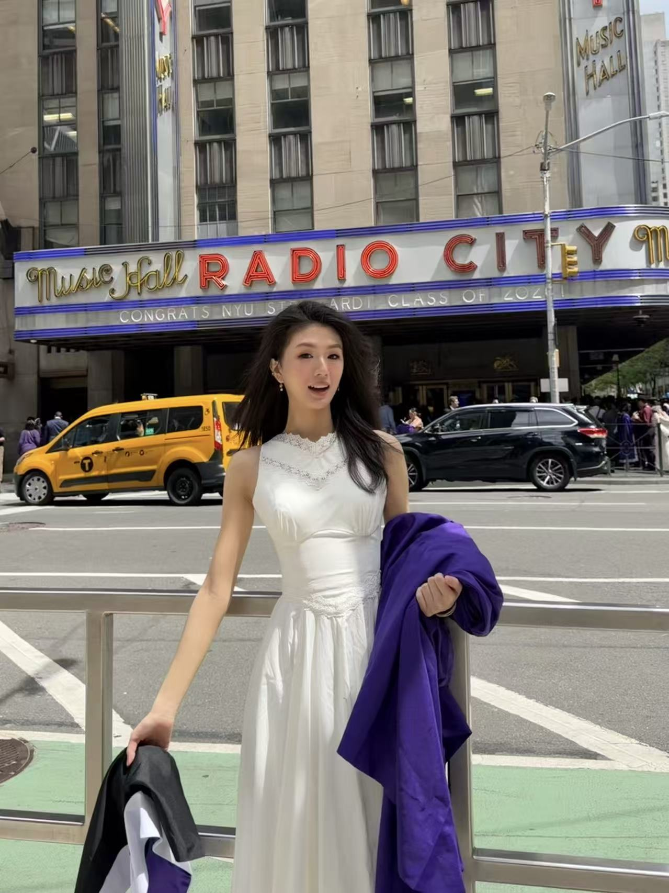

Hi, I'm Merry.
I earned my bachelor's degree in Computer Science and my master's degree in Learning Technology & Experience Design from New York University. Combining technical foundations with user-centered design, I enjoy turning complex problems into intuitive digital products that are both functional and engaging.
Outside of work, I'm exploring fintech by studying financial markets and preparing for the SIE exam. I'm particularly interested in how thoughtful design can make digital financial products more intuitive and accessible.